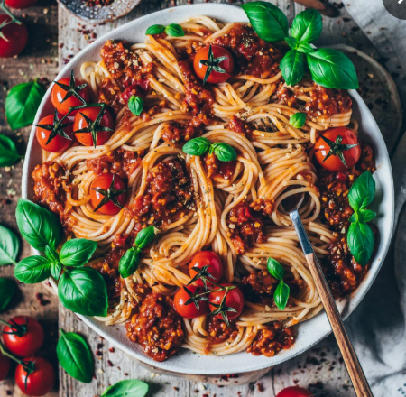

Spaghetti Bolognese
Ein klassisches italienisches Gericht.

Zutaten für 4 Personen
| 1L |
Wasser |
| 400g |
Verschiertes Rindfleisch |
| 500g |
Spaghetti |
| 1EL |
Kräuter |
| 1TL |
Salz, Kurkuma, Gewürze |
| 1Packung |
Tomatensauce |
Benötigte Küchenutensilien
- Kochtopf
- Pfanne
- Sieb
- Kochlöffel
Zeit
40 Minuten, 10 Minuten Zubereitung, 30 Minuten Kochzeit
Zubereitung
- Das Wasser kochen.
- Die Spaghetti hinzufügen und nach Packungsanleitung kochen.
- Das Rindfleisch in einer Pfanne anbraten und danach Tomatensauce und 250ml Wasser dazu geben.
- 30 Minuten köcheln lassen und regelmäßig umrühren, damit es nicht anbrennt.
- Mit Salz, Kurkuma und Gewürzen abschmecken.
- Die Spaghetti in die Soße geben und mischen.
ÄHNLICHE REZEPTE